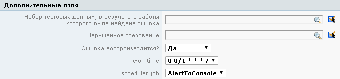

|
<< Click to Display Table of Contents >> Navigation: Rus > Руководство разработчика > Как писать скрипты и триггеры в TrackStudio > Как использовать настройки операций по расписанию > Как сделать динамический интервал для операций по расписанию |
Реализованный механизм находится в проекте скриптов в папке etc/development/scripts. Реализация написана в утилитном классе ItitialJob.
package scripts;
import com.trackstudio.app.UdfValue;
import com.trackstudio.app.adapter.scheduler.SchedulerManager;
import com.trackstudio.exception.GranException;
import com.trackstudio.kernel.cache.TaskRelatedInfo;
import com.trackstudio.kernel.cache.TaskRelatedManager;
import com.trackstudio.tools.Pair;
import org.quartz.Job;
import org.quartz.JobBuilder;
import org.quartz.impl.triggers.CronTriggerImpl;
import org.slf4j.Logger;
import org.slf4j.LoggerFactory;
/**
* TODO: comment
* @author parsentev
* @since 25.04.2016
*/
public class InitialJob {
private static final Logger log = LoggerFactory.getLogger(InitialJob.class);
private final TaskRelatedInfo info;
private final TaskRelatedManager manager;
public InitialJob(TaskRelatedInfo info) {
this.info = info;
this.manager = TaskRelatedManager.getInstance();
}
public void init() throws GranException {
try {
String jobClass = null;
String cronTime = null;
for (UdfValue ul : manager.getUDFValues(info.getId())) {
if ("scheduler job".equals(ul.getCaption()) &&
ul.getValueContainer().getValue(null)!=null) {
jobClass = "scripts." + ((Pair) ul.getValueContainer()
.getValue(null)).getValue();
} else if ("cron time".equals(ul.getCaption()) &&
ul.getValueContainer().getValue(null)!=null) {
cronTime = ((Pair) ul.getValueContainer()
.getValue(null)).getValue();
}
}
if (jobClass != null && !"scripts.none".equals(jobClass) &&
cronTime != null && !"none".equals(cronTime)) {
SchedulerManager.getInstance().deleteJob(info.getId());
CronTriggerImpl trigger = new CronTriggerImpl();
trigger.setName(String.format("trigger %s", info.getId()));
trigger.setCronExpression(cronTime);
SchedulerManager.getInstance().scheduleJob(
JobBuilder.newJob((Class<Job>) Class.forName(jobClass)).withIdentity(info.getId()).build(),
trigger
);
}
} catch (Exception e) {
throw new GranException(e);
}
}
}
Объект InitialJob в качестве параметра принимает задачу и в методе init() проверяет у нее дополнительные поля "scheduler job" и "cron time". В случае, когда оба поля заполнены, создается новое задание по расписанию из поля "scheduler job" с временем выполнения из "cron time".

Оба поля являются пользовательскими полями типа "Список" в процессе. В значения поля "cron time" записываются нужные интервалы в синтаксисе quartz. В значения же поля "scheduler job" записываются имена классов, которые лежат в папке etc/plugins/scripts (в проекте это класс AlertToConsole).
package scripts;
import org.quartz.Job;
import org.quartz.JobExecutionContext;
import org.quartz.JobExecutionException;
import org.slf4j.Logger;
import org.slf4j.LoggerFactory;
/**
* TODO: comment
* @author parsentev
* @since 25.04.2016
*/
public class AlertToConsole implements Job {
private static final Logger log = LoggerFactory.getLogger(AlertToConsole.class);
@Override
public void execute(JobExecutionContext jobExecutionContext) throws JobExecutionException {
System.out.println("Alert");
}
}
Класс с заданием по расписанию должен реализовывать интерфейс Job. Все необходимые действия реализуются в переопределенном методе execute(JobExecutionContext jobExecutionContext);
Операция по расписанию запускается after_create скриптом InitialSchedulerJob, после создания задачи. Скрипт подключается в настройках категории.
package scripts.after_create_task.example;
import com.trackstudio.exception.GranException;
import com.trackstudio.external.TaskTrigger;
import com.trackstudio.secured.SecuredTaskTriggerBean;
import org.slf4j.Logger;
import org.slf4j.LoggerFactory;
import scripts.InitialJob;
/**
* TODO: comment
* @author parsentev
* @since 25.04.2016
*/
public class InitialSchedulerJob implements TaskTrigger {
private static final Logger log = LoggerFactory.getLogger(InitialSchedulerJob.class);
@Override
public SecuredTaskTriggerBean execute(SecuredTaskTriggerBean task) throws GranException {
new InitialJob(task.getTask()).init();
return task;
}
}
В случае необходимости можно сделать after скрипты, срабатывающие после операций или редактирования задачи.
Скрипт InitialLoader при перезапуске сервера проверяет все задачи в системе и перезагружает для них задания по расписанию.
package scripts.scheduler.example;
import com.trackstudio.app.adapter.scheduler.SchedulerManager;
import com.trackstudio.external.IGeneralScheduler;
import com.trackstudio.kernel.cache.TaskRelatedInfo;
import com.trackstudio.kernel.cache.TaskRelatedManager;
import org.slf4j.Logger;
import org.slf4j.LoggerFactory;
import scripts.InitialJob;
/**
* TODO: comment
* @author parsentev
* @since 25.04.2016
*/
public class InitialLoader implements IGeneralScheduler{
private static final Logger log = LoggerFactory.getLogger(InitialLoader.class);
@Override
public String getClassName() {
return InitialLoader.class.getName();
}
@Override
public String getCronTime() {
return "0/1 * * * * ?";
}
@Override
public String getName() {
return "initial loader";
}
@Override
public String execute() throws Exception {
TaskRelatedManager manager = TaskRelatedManager.getInstance();
for (TaskRelatedInfo info : manager.getCacheContents()) {
new InitialJob(info).init();
}
SchedulerManager.getInstance().deleteJob(this.getName());
return null;
}
@Override
public boolean isUse() {
return true;
}
}